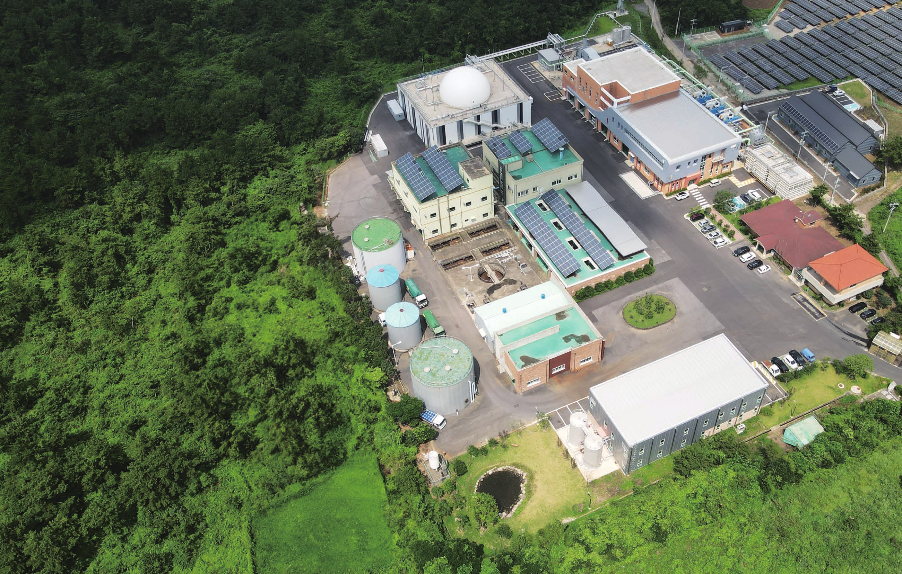
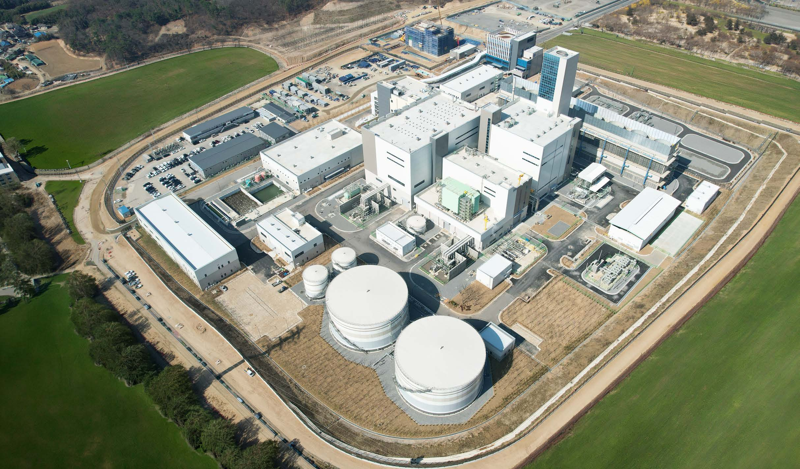

HOME > 지속가능경영 > 환경경영
환경경영 ENVIRONMENTAL MANAGEMENT
ENVIRONMENTAL MANAGEMENT
01 환경경영

현장의 모든 과정에서
환경을 생각합니다. 환경 영향을 줄이고 자원과 에너지를 아끼는 실천을 이어갑니다.
환경을 생각합니다. 환경 영향을 줄이고 자원과 에너지를 아끼는 실천을 이어갑니다.
02 현장 실천

현장에서 지키는
환경의 기준
환경의 기준
- 01 현장 관리
- 비산먼지·폐기물·소음·수질을 관리합니다.
- 02 생태 보호
- 현장 주변 생물과 서식지를 고려합니다.
- 03 친환경 기술
- 자원과 에너지를 아끼는 기술을 연구합니다.
관리 체계와 교육으로 실천을 이어갑니다.
- 01ISO 14001환경경영시스템 운영
- 02정기 환경교육환경관리자 직무교육과 현장 교육
- 03환경 정화 활동현장 주변을 함께 살피고 개선합니다.
03 환경경영 실천 약속
지속가능한 내일을 위해 현장에서 환경을 지키는 실천을 이어갑니다.
환경경영 방침과 현장 활동, 친환경 기술을 통해 책임 있는 건설을 이어갑니다.
- 01현장 관리현장의 환경 영향을 확인하고 줄입니다.
- 02생태 보호주변 생태와 서식지를 고려합니다.
- 03친환경 기술자원과 에너지를 아끼는 방법을 찾습니다.